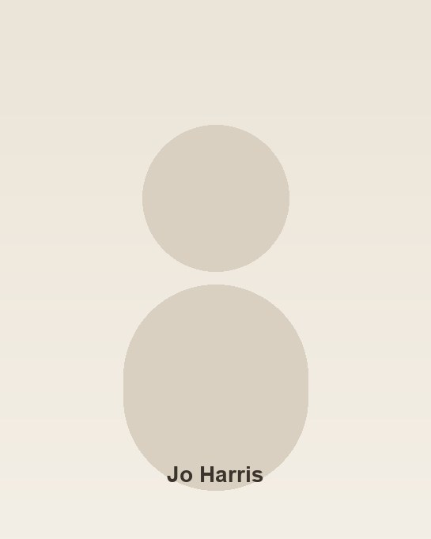

TWA Teacher
Jo Harris
Lead Teacher · Pregnancy and Postnatal
Reading · Berkshire
Jo is a yoga teacher and birth and postnatal doula supporting people through pregnancy, birth and motherhood.

Also find Jo at
About
Jo started teaching yoga in London in 2014 and has more than 4,000 hours of teaching experience across studios, community spaces and corporate settings.
Soon after completing her first teacher training, she went on to train in pregnancy and postnatal yoga where she found a passion for supporting women through this extraordinary time: helping them stay connected to their bodies, prepare for birth and navigate the many physical and emotional changes that come with pregnancy and early motherhood.
When Jo became a mother in 2022 she moved to Reading and her passion for supporting pregnancy and postpartum deepened. She became fascinated by birth, the fourth trimester and matrescence, the profound process of becoming a mother. Jo joined the Yoga Reading team teaching pregnancy and postnatal yoga as well as Vinyasa Flow and began her training as a doula. She now teaches yoga alongside supporting women and families with practical, emotional and informational support throughout pregnancy, birth and the postnatal period.
Jo loves how yoga gives space to nurture community, prepare women for birth on a physical and emotional level and support recovery during the postnatal period. It is a real privilege to be alongside someone during such an important moment in their life, to hold space and offer support through this transitional time.
Jo is an experienced teacher trainer, having trained hundreds of teachers on their 200-hour and pregnancy and postnatal teacher training programmes since 2018. At Thames Wellness Academy she is Lead Teacher for Pregnancy and Postnatal.
Qualifications and affiliations
- Lead Teacher, Pregnancy and Postnatal, Thames Wellness Academy
- 200-hour Vinyasa Flow Yoga Teacher Training, Yoga London (2014)
- Prenatal Yoga Teacher Training, Yoga London (2015)
- 300-hour Advanced Yoga Teacher Training, Yoga London (2021)
- 300-hour Yoga Teacher Training, Ashtanga and Yin Yoga
- 25-hour Advanced Postnatal Yoga Teacher Training, Sally Parkes Yoga (2020)
- Birthlight Integrated Nurturing Baby Massage and Baby Yoga (2021)
- Nurturing Birth Expansive Doula Course, birth and postnatal doula (2024)
- Anatomy Applied to Yoga CPD, Dr Yogi at Triyoga
- Total Yoga Nidra Foundation CPD, Yoga Nidra Network
- Biomechanics for Birth, Shellie Poulter
- Biomechanics for Birth Workshop Training, Tessa Venuti Sanderson
- First Aid at Work, Worksafe Training
- Member of Yoga Professionals
- Member of Doula UK
- Member of Nurturing Birth
Certificates
Verified certificates for Jo's yoga teaching, pregnancy and postnatal work, and doula training. Each row explains what the award means in plain language, with a PDF download of the certificate on file.
| Issuer | Qualification | About | Year | Download |
|---|---|---|---|---|
| Nurturing Birth |
Expansive Doula Course |
Certificate confirming completion of the Nurturing Birth Expansive Course, covering physiology, perinatal scenarios, the doula role before, during and after birth, active listening, infant feeding, and business skills for birth and postnatal doula work. |
2024 | Download PDF |
| Birthlight |
Integrated Nurturing Baby Massage and Baby Yoga |
Birthlight certificate of attendance for Integrated Nurturing Baby Massage and Baby Yoga 1, awarded to Joanna Harris. The certificate records competence to hold classes as a probationary teacher while working toward full Birthlight Certified Teacher status. |
2021 | Download PDF |
| Yoga London |
300-hour Advanced Yoga Teacher Training |
Advanced 300-hour teacher training certificate from Yoga London, confirming Jo met all course requirements beyond her foundational teaching qualification. |
2021 | Download PDF |
| Sally Parkes Yoga |
Advanced Postnatal Yoga Teacher Training |
25-hour advanced postnatal yoga teacher training with Sally Parkes, covering postnatal rehabilitation methods and advanced anatomy for teaching after birth. |
2020 | Download PDF |
|
Prenatal Yoga Teacher Training |
Yoga London Prenatal Yoga Teacher Training certificate. The school is registered with Yoga Alliance including RPYS (Registered Prenatal Yoga School). Course directors: Anja Brierley Lange and Lisa Toth. |
2015 | Download PDF | |
| Yoga London |
200-hour Vinyasa Flow Yoga Teacher Training |
Foundational Yoga Instructor Certificate of Training from Yoga London for the International Teacher Training 200-hour programme in Vinyasa Flow Yoga, awarded to Joanna Harris. |
2014 | Download PDF |
Certificate wording follows the documents on file. Further trainings listed above without a download row (Ashtanga and Yin 300-hour, Anatomy Applied to Yoga, Total Yoga Nidra Foundation, Biomechanics for Birth, First Aid at Work and membership cards) can be added once certificates are supplied.
Teaching and specialties
Jo's teaching focuses on pregnancy, birth preparation, postnatal recovery and the wider journey into motherhood, alongside Vinyasa Flow and Yoga Nidra.
- Vinyasa Flow
- Pregnancy yoga
- Postnatal yoga
- Integrated baby yoga and baby massage
- Yoga Nidra
- Birth and postnatal doula support
- Teacher training for 200-hour and pregnancy and postnatal pathways
Explore related pathways: Pregnancy Yoga Training, Yoga Nidra, CPD and Foundation Training.
Studios and work
Jo teaches pregnancy, postnatal and Vinyasa Flow classes with the Yoga Reading team and supports women and families as a birth and postnatal doula. She has taught across studios, community spaces and corporate settings since 2014, and has trained teachers on 200-hour and pregnancy and postnatal programmes since 2018.